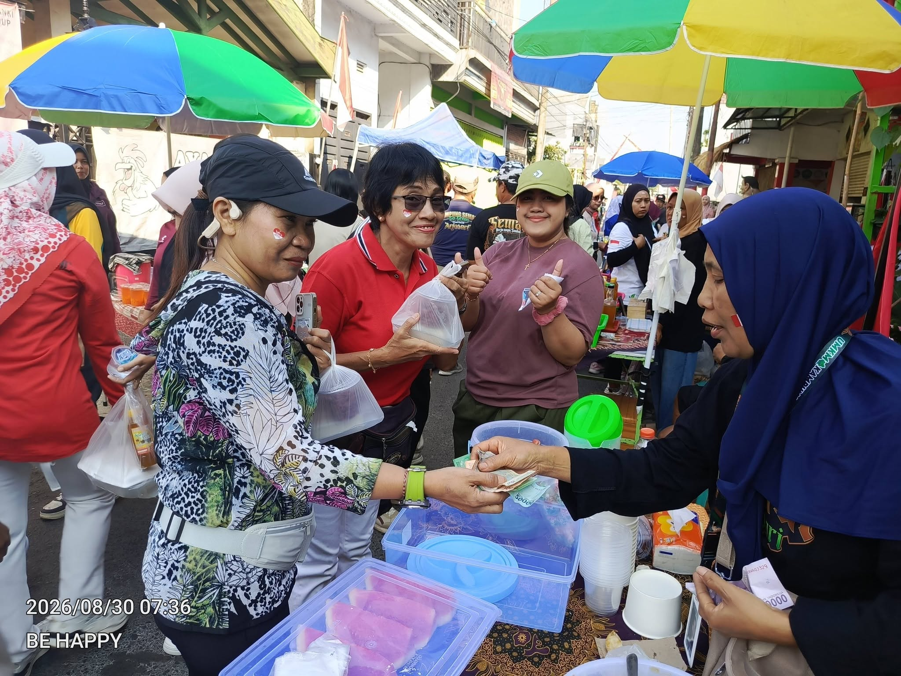
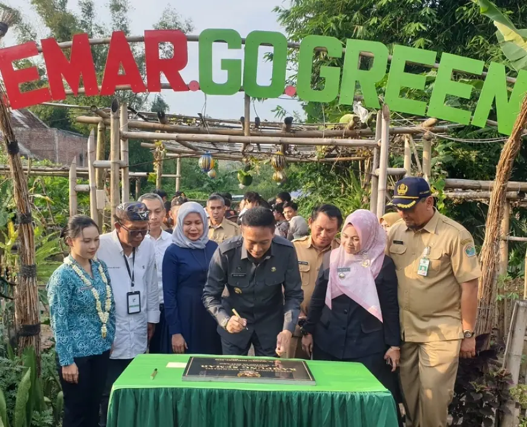

Berita Kampung Semar
Kumpulan liputan media tentang perkembangan Kampung Semar Go Green di Arjosari, Kota Malang. Temukan kabar seputar pertanian perkotaan, inovasi lingkungan, kegiatan warga, kunjungan edukasi, dan UMKM.
Kabar dari Berbagai Media
Setiap kartu mengarah langsung ke halaman berita asli. Ringkasan disusun ulang untuk membantu pembaca menemukan topik yang ingin diikuti.
Menampilkan 18 artikel pilihan
 Pertanian & Pangan
Foto: Radar Malang
Pertanian & Pangan
Foto: Radar Malang
Panen 350 Melon Kampung Semar Ludes dalam Dua Jam
Kegiatan petik melon di Kampung Semar menarik pengunjung dari dalam dan luar kota. Radar Malang melaporkan 350 buah melon habis dipanen dalam dua jam; greenhouse warga mengembangkan varietas sweet lavender dan intanon, sekaligus menjadi sarana rekreasi serta edukasi pertanian.
Baca berita di Radar Malang Teknologi & Peternakan
Foto: Polbangtan Malang for TIMES Indonesia
Teknologi & Peternakan
Foto: Polbangtan Malang for TIMES Indonesia
Polbangtan Malang Perkuat Produksi DOC Kampung Semar dengan Smart Egg Incubator Berbasis IoT
Polbangtan Malang mengadakan pelatihan penggunaan mesin tetas cerdas berbasis Internet of Things (IoT) di Kampung Semar. Warga diperkenalkan pada pencatatan dan pemantauan proses penetasan, serta menerima dua unit mesin tetas untuk mendukung pengembangan budidaya ayam KUB.
Baca berita di TIMES Indonesia Pertanian Perkotaan
Foto: Darmono / Radar Malang
Pertanian Perkotaan
Foto: Darmono / Radar Malang
Kampung Semar Seriusi Pertanian Perkotaan di Lahan Sempit
Warga mengembangkan melon premium dengan sistem greenhouse, uji coba padi di dalam galon, sayuran, hingga budidaya lele. Pengolahan sampah seperti eco-enzyme, lilin aromaterapi, dan batik juga ikut menggerakkan kegiatan ekonomi warga.
Baca berita di Radar Malang UMKM & Budaya
Foto: Pemerintah Kota Malang
UMKM & Budaya
Foto: Pemerintah Kota Malang
Wali Kota Malang Buka Semar Tempo Doeloe 3, Dorong UMKM dan Pelestarian Budaya
Semar Tempo Doeloe Jilid 3 berlangsung pada 14–17 Mei 2026 sebagai bagian dari peringatan ulang tahun kedua Kampung Semar. Ratusan warga RW 02 Arjosari ikut berpartisipasi melalui kuliner tradisional, jajanan kekinian, dekorasi bernuansa lawas, dan kegiatan budaya.
Baca berita di Pemerintah Kota Malang UMKM & Gotong Royong
Foto: Malang Pariwara
UMKM & Gotong Royong
Foto: Malang Pariwara
Lorong Waktu di Kampung Semar, Hujan Tak Surutkan Semangat Warga Dongkrak UMKM
Semar Tempo Doeloe Jilid 3 menghadirkan puluhan stan UMKM dan sajian budaya tradisional. Hujan tidak menghentikan warga dan pengunjung; liputan menyoroti partisipasi ratusan warga RW 02, kuliner lokal, serta dorongan ekonomi kerakyatan.
Baca berita di Malang Pariwara UMKM & Budaya
Foto: Nedi Putra AW / BacaMalang.com
UMKM & Budaya
Foto: Nedi Putra AW / BacaMalang.com
“Lorong Waktu” Semar Tempo Doeloe, Ruang Kreatif dan Penggerak UMKM Warga
Liputan Semar Tempo Doeloe Jilid 3 menyoroti empat hari perayaan yang memadukan nostalgia, hiburan rakyat, seni budaya, kuliner, dan aktivitas UMKM. Pembina kampung Bambang Irianto menekankan pentingnya roadmap, perubahan pola pikir, kolaborasi, dan kemandirian warga.
Baca berita di BacaMalang.com Lingkungan & Gotong Royong
Foto: Sketsa Malang
Lingkungan & Gotong Royong
Foto: Sketsa Malang
Babinsa Blimbing Bersama Warga Kampung Semar Bersihkan Lingkungan
Warga bersama Babinsa Koramil 0833-03/Blimbing melakukan kerja bakti di kawasan RT 06 RW 02. Kegiatan meliputi menyapu jalan, membersihkan selokan, dan memangkas rumput liar untuk menjaga lingkungan tetap bersih, sehat, dan nyaman.
Baca berita di Sketsa Malang Kunjungan Edukasi
Foto: Aditya Manggala / BeritaMalang.com
Kunjungan Edukasi
Foto: Aditya Manggala / BeritaMalang.com
Warga Desa Ngunut Ponorogo Studi Tiru Pengelolaan Lingkungan ke Kampung Semar
Sebanyak 40 warga Desa Ngunut, Ponorogo, berkunjung untuk mempelajari praktik konservasi air, pengelolaan sampah, dan penghijauan. Rombongan menelusuri sejumlah titik, termasuk Pojok Pancasila, Pojok Turi, serta area UMKM lokal.
Baca berita di BeritaMalang.com Peternakan & Pembelajaran
Foto: BRMP Jawa Timur
Peternakan & Pembelajaran
Foto: BRMP Jawa Timur
Kampung Semar Arjosari Dalami Budidaya Ayam KUB di BRMP Jawa Timur
Sebanyak 12 warga dan pengurus Kampung Semar mengikuti kunjungan belajar ke BRMP Jawa Timur pada 24 Desember 2025. Kegiatan ini memperdalam pengetahuan budidaya Ayam Kampung Unggul Balitbangtan (KUB), sebagai salah satu peluang pengembangan peternakan berbasis warga.
Baca berita di BRMP Jawa Timur
UMKM & Digitalisasi Foto: Dokumentasi Kampung SemarFestival UMKM “Misem” di Kampung Semar: Kreativitas Warga Tumbuh, Transaksi Kini Tanpa Tunai
Pasar Minggu Semar (Misem) menjadi bagian perayaan satu tahun Kampung Semar. Lebih dari 40 pelaku UMKM dari Kampung Semar dan sekitarnya mengikuti kegiatan. Pembayaran digital QRIS digunakan setelah pelaku usaha mendapat sosialisasi dari Bank Indonesia Malang.
Baca berita di AdaDiMalang.com Foto Berita · UMKM
Foto: ANTARA Jatim / Ari Bowo Sucipto
Foto Berita · UMKM
Foto: ANTARA Jatim / Ari Bowo Sucipto
Festival Semar Tempo Doeloe: Jajanan Tradisional dan Perluasan Pasar UMKM
Foto-berita ANTARA merekam pelaku UMKM yang menata makanan tradisional opak dalam Festival Semar Tempoe Doeloe Jilid 2. Festival tujuh hari ini digelar untuk menarik pengunjung ke kampung tematik dan memperluas pasar kuliner lokal.
Lihat foto berita di ANTARA Jatim UMKM & Kolaborasi
Foto: TIMES Indonesia
UMKM & Kolaborasi
Foto: TIMES Indonesia
Bazar yang Merangkul, UMKM Luar Jadi Bagian Tempoe Doeloe di Kampung Semar
Tempoe Doloe 2 memberi ruang kepada pelaku UMKM dari luar kampung untuk ikut berjualan. Liputan ini menyoroti kolaborasi lintas pelaku usaha serta stan kuliner yang menghidupkan lorong kampung selama bazar.
Baca berita di TIMES Malang UMKM & Budaya
Foto: Almas Elmadina Aisyah / TIMES Indonesia
UMKM & Budaya
Foto: Almas Elmadina Aisyah / TIMES Indonesia
Kampung Semar Malang Gelar Festival Tempo Dulu Selama Tujuh Hari
Tempoe Doloe 2: Bazar UMKM menghadirkan jajanan jadul, permainan tradisional, pertunjukan budaya, dan lorong-lorong kampung bertema nostalgia. Kegiatan digerakkan secara swadaya dan menjadi ruang bagi warga untuk memperkenalkan produk lokal lintas generasi.
Baca berita di TIMES Malang Lingkungan & Kehidupan Warga
Foto: Almas Elmadina Aisyah / TIMES Indonesia
Lingkungan & Kehidupan Warga
Foto: Almas Elmadina Aisyah / TIMES Indonesia
Kampung Semar: Harmoni Sosial yang Tumbuh dari Jiwa, Tangan, dan Cinta
Liputan ini mengangkat pengelolaan tujuh ladang dasawisma, taman toga, kolam pancing, pengolahan sampah organik berbasis maggot, hingga pojok literasi. Ceritanya menempatkan gotong royong dan rasa memiliki sebagai fondasi kampung yang asri dan mandiri.
Baca berita di TIMES Indonesia Pertanian & Edukasi
Foto: Dokumentasi Kampung Semar
Pertanian & Edukasi
Foto: Dokumentasi Kampung Semar
Percontohan urban farming, Jadi Tempat Belajar Pelajar dari Washington DC
Kampung Semar di RT 06 RW 02 Arjosari menjadi lokasi belajar tentang pertanian perkotaan. Liputan ini mengangkat budaya kerja bakti warga, pemanfaatan lahan kosong untuk sayur dan buah, serta kedatangan pelajar dari Washington DC.
Baca berita di Malang Posco Media
Peresmian & Lingkungan Foto: Dokumentasi Kampung SemarResmikan Kampung Semar, Pj Wali Kota Malang: Pantas Jadi Role Model Kampung Tematik Internasional
Peresmian Kampung Semar sebagai kampung Go Green dihadiri mahasiswa dan dosen dari National University of Singapore dan Universitas Brawijaya. Artikel mengangkat urban farming, taman toga, perikanan, konservasi air, biopori, serta perubahan pola pikir warga.
Baca berita di Malang Pariwara Foto Berita · Pertanian
Foto: ANTARA FOTO / Ari Bowo Sucipto
Foto Berita · Pertanian
Foto: ANTARA FOTO / Ari Bowo Sucipto
Kampung urban farming di Malang
Dokumentasi foto ANTARA menampilkan warga menyirami tanaman terong di kebun Semar. Foto ini merekam pemanfaatan lahan terbengkalai di kawasan padat penduduk untuk menanam sayur dan buah, menambah ruang hijau, serta mendukung ketahanan pangan.
Lihat foto berita di ANTARA FOTO Kunjungan Internasional
Foto: Pemerintah Kota Malang
Kunjungan Internasional
Foto: Pemerintah Kota Malang
Daya Tarik Glintung Go Green dan Kampung Semar bagi Mahasiswa Internasional
Pemerintah Kota Malang melaporkan kunjungan belajar 30 mahasiswa National University of Singapore ke Glintung Go Green dan Kampung Semar. Pada kesempatan yang sama, Kampung Semar diresmikan sebagai kampung berkonsep Go Green; praktik urban farming dan perubahan perilaku warga menjadi sorotan.
Baca berita di Pemerintah Kota MalangCatatan sumber: Foto, judul publikasi, dan isi lengkap merupakan milik masing-masing penerbit. Halaman ini menampilkan foto liputan beserta kredit sumber dan ringkasan singkat. Sebagian tautan menuju foto-berita atau galeri foto; klik kartu untuk membuka publikasi asli di situs penerbit.